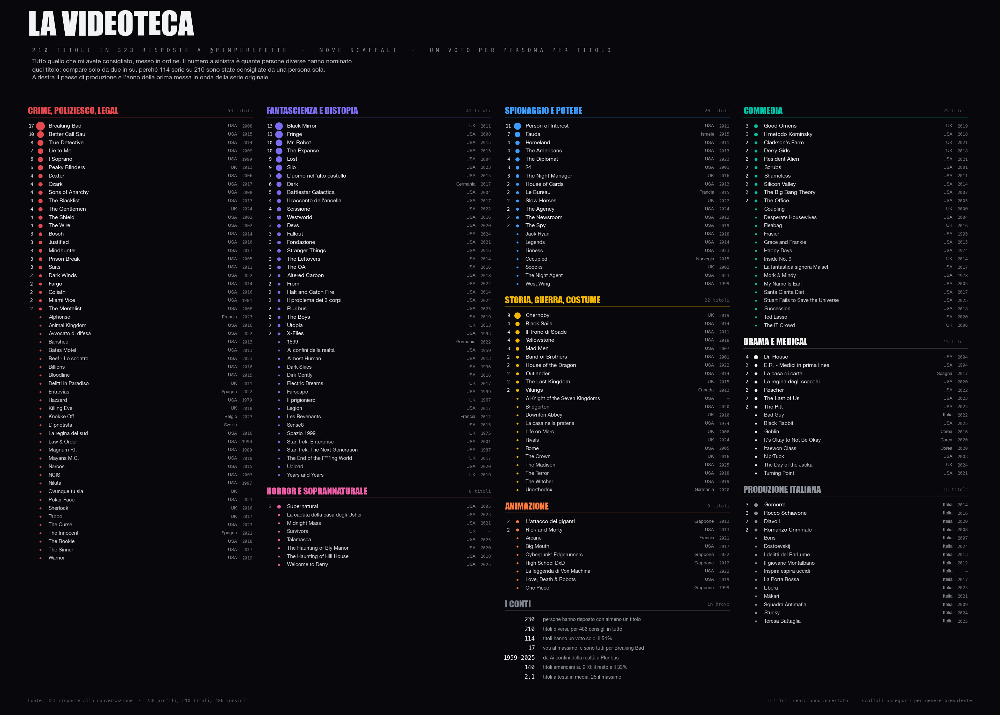
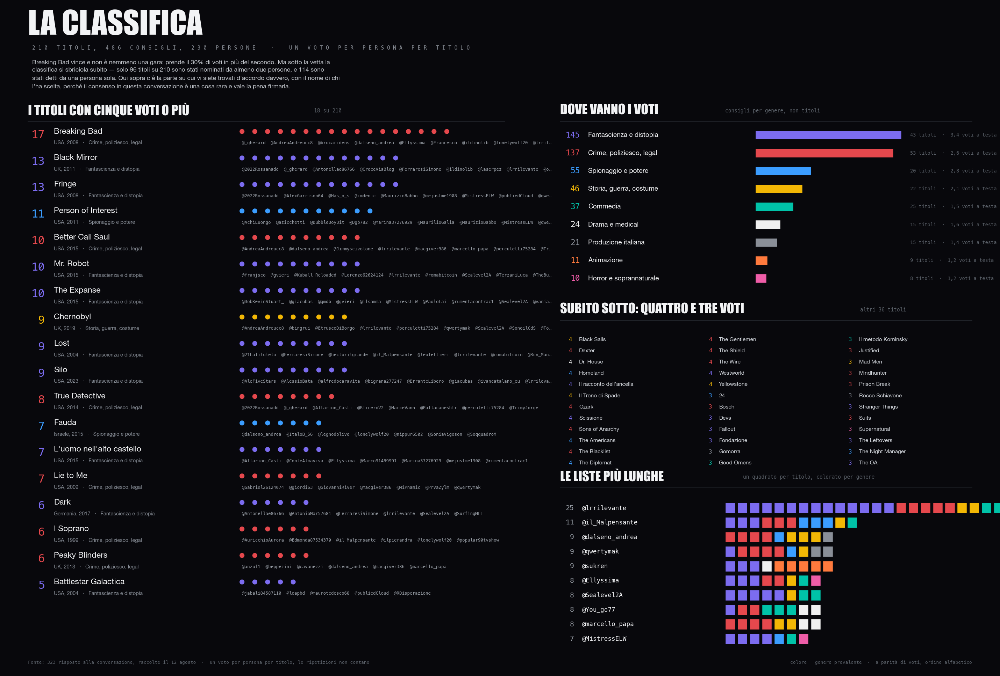
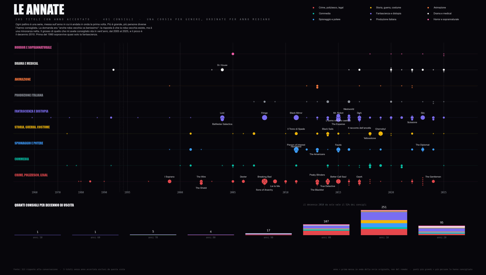
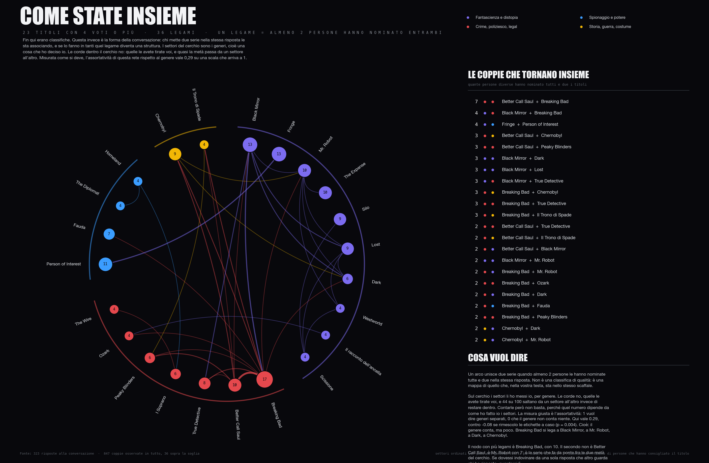
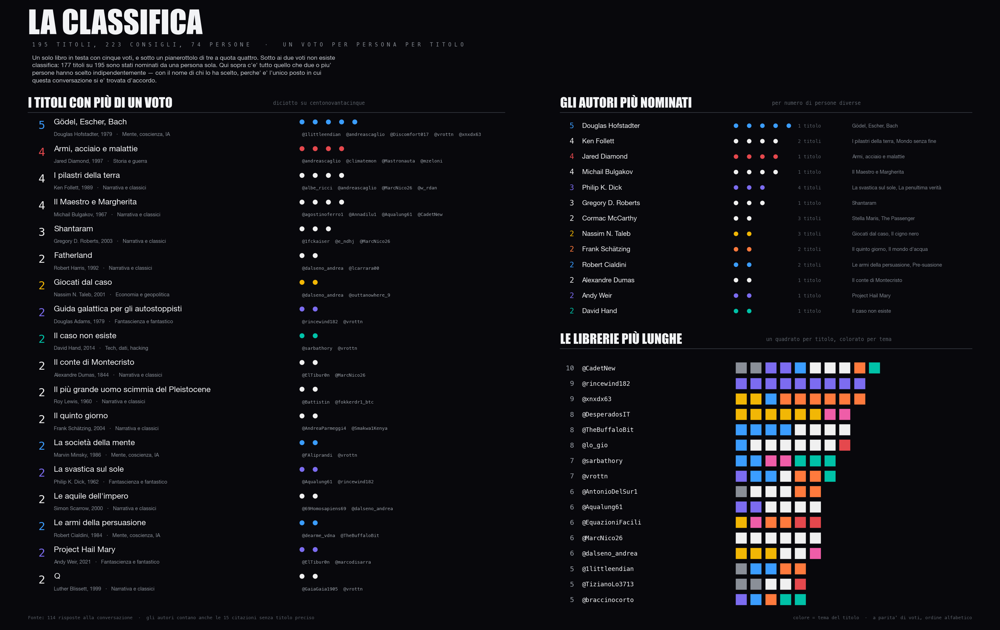
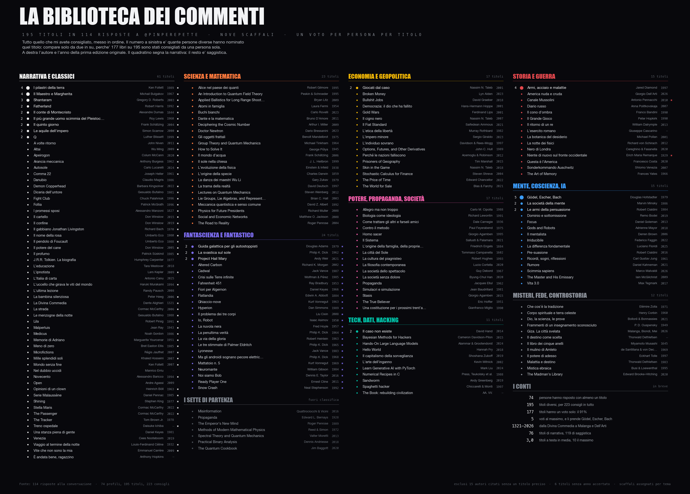
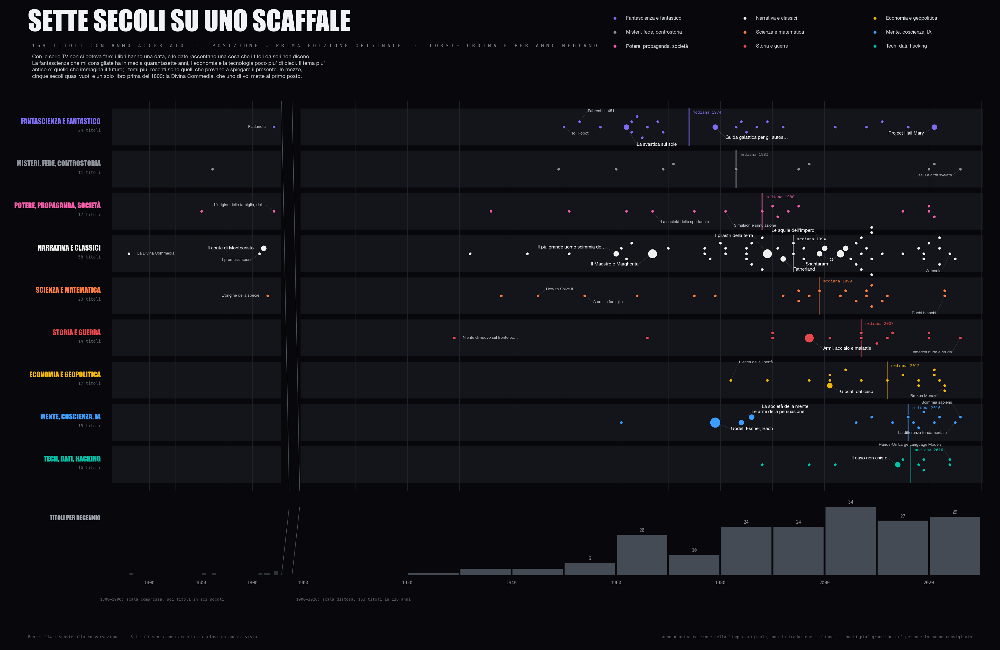
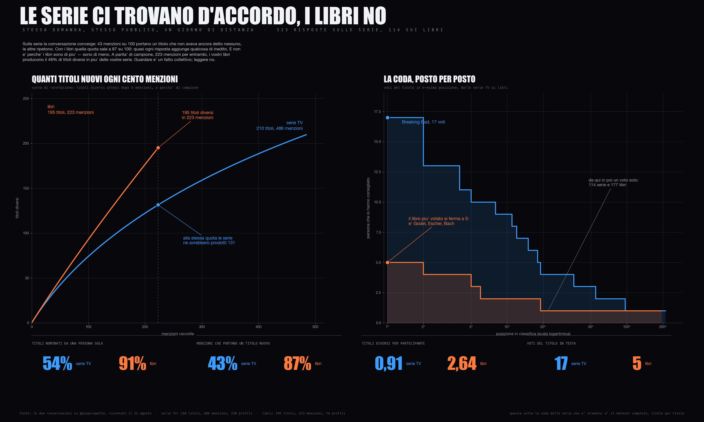
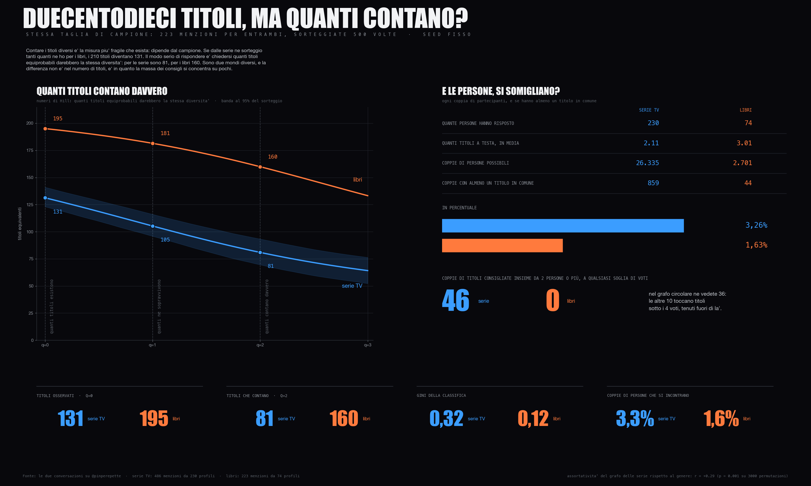
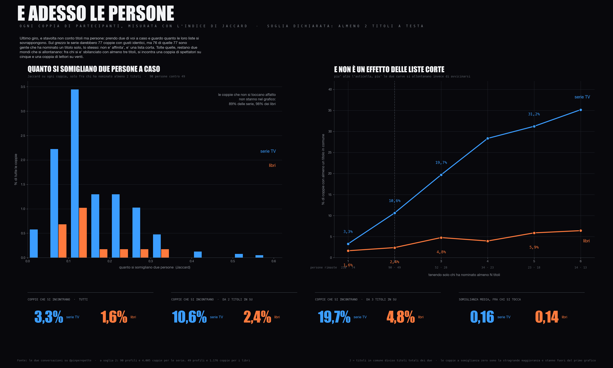

Non guardo praticamente mai la TV. Ogni tanto però mollo tutto e mi immergo in una serie, e lunedì sera avevo voglia di farlo senza sapere da dove partire. Quindi ho fatto la cosa più semplice del mondo: ho chiesto su X.
Nel giro di poche ore erano più di trecento commenti. Non riuscivo nemmeno a leggerli tutti, figuriamoci a rispondere. A un certo punto ho scritto sotto al post che era diventato un DDoS, e non era del tutto una battuta: la coda di notifiche non scendeva mai.
Allora ho fatto quello che faccio sempre quando i dati mi arrivano addosso invece di andarmeli a cercare. Li ho contati. Sono usciti quattro grafici, e sono piaciuti abbastanza che il giorno dopo ho rifatto il giro con i libri, e poi altri quattro grafici.
Poi mi avete chiesto le classifiche aggiornate, perché nel frattempo altra gente aveva risposto. Ed è successa una cosa che mi ha dato fastidio: mi sono accorto che gli script del primo giro erano rimasti solo nella mia testa e in una cartella temporanea. Quindi ho rifatto tutto da capo, questa volta scritto bene, e sta tutto qui dentro. Dataset, script e risposte grezze stanno in scripts/mi-avete-costruito-un-dataset, quindi se una riga vi sembra sbagliata la vedete e la correggete.
raccolte il 12 agosto
per 486 consigli
per 195 titoli
della metà dei titoli
Primo problema: l'API non ti dà i tuoi stessi commenti
Sembra banale. Non lo è. X dice che sotto al post ci sono 373 risposte, e quando le chiedi te ne dà duecento. Alla fine, incrociando quattro interrogazioni diverse, sono arrivato a 323 risposte uniche su 373 dichiarate, l'87 per cento. Le altre cinquanta non c'è verso. Lo scrivo subito e in grande perché è esattamente il tipo di cosa che nessuno mette mai sotto ai grafici.
Il motivo è che l'endpoint è paginato e la paginazione si ferma: dieci pagine, venti risposte a pagina, duecento e buonanotte. E non sono nemmeno le prime duecento, sono quelle che decide l'ordinamento: nel mio caso partivano dalle 20:18 di lunedì, quindi le prime tre ore e mezza di conversazione, cioè il pezzo grosso, non c'erano proprio. La soluzione è brutta ma funziona: interroghi la stessa conversazione da più angolazioni (per data, per popolarità, per finestra temporale chiusa, per conversation_id invece che per thread) e fai l'unione degli id, perché ogni query pesca un sottoinsieme un po' diverso.
import json, glob # ogni chiamata (x_replies_to, ricerche con sort/finestre diverse) finisce # in un file dentro raw/. Qui si fa solo l'unione, deduplicata per id. def unisci(cartella, conversazione): visti = {} for f in glob.glob(cartella + "/*.json"): d = json.load(open(f)) for i in d.get("items", []): if i.get("conversation_id") == conversazione and i["id"] != conversazione: visti[i["id"]] = i # stesso id = stessa risposta return sorted(visti.values(), key=lambda x: x["created_at"]) risposte = unisci("raw", "2086859435490656571") print(len(risposte), "risposte,", len({r["author"] for r in risposte}), "profili distinti")
Secondo problema: questa parte non la automatizzi
Uno legge "Fringe prima di tutte" e capisce Fringe. Un regex no. Nelle 323 risposte c'era gente che scriveva Le Boureau per Le Bureau, Batlestar per Battlestar, Cernobyl con la C, Breaking Bed (due volte, da persone diverse). C'era chi rispondeva a un altro commento con "vero, quella è bellissima" senza ripetere il titolo, e quel voto è valido eccome. C'era chi consigliava una cosa e ne stroncava altre quattro nella stessa riga, e quelle quattro non sono voti.
E poi c'era il commento con un GIF e la scritta "una specie di Bud Spencer on steroids", che è Reacher. L'ho capito solo perché tre risposte più sotto qualcuno scriveva "vediamo la quarta stagione che esce domani".
Quindi il dataset è curato a mano, riga per riga, e ha una forma volutamente stupida: un dizionario di titoli con i metadati, e una lista piatta di coppie (persona, titolo). Una riga per ogni volta che una persona consiglia una cosa.
# dati.py — chiave: (titolo, anno, paese, categoria) SERIE = { "breakingbad": ("Breaking Bad", 2008, "USA", "crime"), "mrrobot": ("Mr. Robot", 2015, "USA", "scifi"), "fauda": ("Fauda", 2015, "Israele", "spionaggio"), "rocco": ("Rocco Schiavone", 2016, "Italia", "italiana"), # ... 210 in tutto } # (utente, chiave) — un voto per persona per titolo RECS = [ ("laserpez", "blackmirror"), ("laserpez", "mindhunter"), ("TheBuffaloBit", "breakingbad"), ("TheBuffaloBit", "mrrobot"), ("nippur6502", "fauda"), ("SoniaVigoson", "fauda"), # risposta di conferma sotto a nippur6502 # ... 486 in tutto ]
La regola che conta è una sola e la ripeto in fondo a ogni grafico: un voto per persona per titolo. Se uno scrive Breaking Bad tre volte in tre commenti diversi, resta un voto. Se una persona ha risposto con venticinque titoli (ed è successo), quei venticinque valgono uno a testa esattamente come il tizio che ne ha scritto uno solo. Altrimenti la classifica la scrivono i più logorroici e non i più d'accordo.
Fatto questo, contare è banale. Il cuore di tutte le classifiche che seguono sono queste tre righe:
import collections voti = collections.Counter(k for _, k in dati.RECS) chi = collections.defaultdict(list) for persona, k in dati.RECS: chi[k].append(persona) classifica = sorted(voti, key=lambda k: (-voti[k], dati.SERIE[k][0].lower()))
Il resto sono seicento righe di matplotlib per farlo sembrare una cosa seria.
Tutto quello che mi avete consigliato
Partiamo dalla mappa completa. Duecentodieci titoli, in nove scaffali per genere, ordinati per voti dentro ogni scaffale. Il pallino a sinistra cresce con i voti, il numero compare solo da due in su.

Le due cose che saltano fuori subito. La prima: 140 titoli su 210 sono americani, il 67 per cento. Quindici sono italiani, e non è male, ma il resto del mondo esiste appena. La seconda: 114 titoli su 210 li ha detti una persona sola. Più della metà di questa lista è il gusto di un singolo, non un consiglio condiviso.
La classifica aggiornata
Ecco la parte che mi avete chiesto. Sopra ci sono solo i titoli da cinque voti in su, con i nomi di chi li ha scelti, perché quello è l'unico posto della conversazione dove ci siamo trovati d'accordo davvero e mi sembrava giusto firmarlo.

Breaking Bad vince con 17 e non è nemmeno una gara: prende il 30 per cento in più del secondo. Poi Black Mirror e Fringe appaiati a 13, Person of Interest a 11, e un plotone a dieci con Better Call Saul, Mr. Robot e The Expanse.
Person of Interest a 11 è la vera sorpresa. Non è una serie di cui si parla ancora molto in giro, e almeno tre di voi hanno scritto qualche variante di "possibile che nessuno gli abbia detto Person of Interest", ognuno convinto di essere il primo. Eravate in undici.
Il dato che però conta di più sta nel sottotitolo di quel grafico: 96 titoli su 210 hanno preso almeno due voti. Gli altri 114 sono roba detta una volta sola. La classifica esiste solo nei primi venti posti, sotto è un elenco di gusti personali che non si incontrano mai.
"Anche roba vecchia va benissimo"
Nel post avevo scritto che andava bene anche roba vecchia. Ho voluto vedere se era vero, cioè se la roba vecchia mi arrivava davvero o se era solo una cortesia che vi avevo fatto.

Prima però una nota da lettore pignolo: dei 486 consigli, 481 hanno una data utilizzabile, perché cinque titoli hanno un anno che non sono riuscito a verificare. I conti di questo paragrafo stanno su quei 481.
Detto questo: la roba vecchia esiste ma è una minoranza netta. Il decennio 2010 da solo vale il 52 per cento di tutti i consigli. Tutto quello che è uscito prima del 1990, che sono trentuno anni di televisione, vale 11 consigli su 481. Il primo pallino a sinistra è del 1959 e sono Ai confini della realtà, l'ultimo è Pluribus dell'anno scorso.
E dentro quel poco che sopravvive c'è un pattern preciso: prima del 1990 restano quasi solo la fantascienza e i polizieschi. Star Trek, Spazio 1999, Il prigioniero, Ai confini della realtà, X-Files, Miami Vice, Magnum. La commedia degli anni Settanta ha lasciato Happy Days e Hazzard e basta. Il resto è evaporato.
La parte che non mi aspettavo: come state insieme
Fin qui erano classifiche, cioè conteggi. Ma nei dati c'era una cosa più interessante che non avevo guardato: quando una persona risponde con quattro titoli in una riga, quei quattro li sta associando. Nella sua testa stanno sullo stesso scaffale.
Se conto quante persone diverse hanno nominato la stessa coppia, mi esce un grafo. E il grafo non lo disegno io: viene fuori da solo.
import collections, itertools per_persona = collections.defaultdict(set) for persona, k in dati.RECS: per_persona[persona].add(k) coppie = collections.Counter() for titoli in per_persona.values(): for a, b in itertools.combinations(sorted(titoli), 2): coppie[(a, b)] += 1 # +1 per ogni persona che li nomina entrambi # soglia: titoli con almeno 4 voti, coppie viste da almeno 2 persone archi = [(a, b, n) for (a, b), n in coppie.items() if n >= 2 and voti[a] >= 4 and voti[b] >= 4]
Ottocentoquarantasette coppie osservate in tutto, e trentasei sopra la soglia che ho scelto per disegnare: titoli con almeno quattro voti, coppie viste da almeno due persone. La soglia sui voti serve solo a non riempire il cerchio di puntini, e più avanti rifaccio il conto senza. Ho provato prima con un layout a molle, quello che si usa di solito per i grafi, e faceva schifo: le componenti scollegate scappavano agli angoli e il centro collassava in una palla illeggibile. Allora l'ho buttato e ho messo i titoli su un cerchio, raggruppati per genere, con le corde dentro.

Guardate quante corde tagliano il cerchio invece di restare dentro il proprio settore: 44 su 100. Solo che quel numero, da solo, non vale granché: dipende da come ho disegnato io i settori. Se accorpassi crime e spionaggio, che è una scelta difendibile, crollerebbe.
La misura che non dipende dai miei settori è l'assortatività, che è roba da analisi di reti: quanto un nodo tende a collegarsi con nodi che hanno la stessa etichetta. Vale 1 se i generi sono mondi separati, 0 se il genere non conta niente, e può anche andare sotto zero se i generi si attraggono. Qui vale 0,29. Per sapere se 0,29 è tanto o poco ho rimescolato le etichette di genere sui nodi tremila volte e rifatto il conto: viene −0,08 in media, e il valore vero non lo raggiunge quasi mai (p = 0,001).
Quindi il genere conta, non è rumore. Ma conta poco, e siamo molto più vicini allo zero che all'uno. Il crime e la fantascienza, che nella mia tabella sono due categorie separate, nelle vostre risposte sono ampiamente lo stesso pubblico. Breaking Bad si lega a Black Mirror, a Mr. Robot, a Dark, a Chernobyl. Il genere è un'etichetta comoda per chi fa i grafici, non è il modo in cui vi ricordate le serie.
E poi c'è la cosa che mi ha divertito di più. Il nodo con più legami è Breaking Bad, con dieci. Il secondo non è Better Call Saul, che è il suo spin off: è Mr. Robot, con sette. Mr. Robot fa da ponte tra le due metà del cerchio. Se dovessi indovinare da una sola risposta cos'altro guarda una persona, guarderei lì.
Restano fuori dodici titoli che hanno quattro voti o più e non hanno mai viaggiato in coppia con nessuno: Dr. House, Yellowstone, The Shield, Sons of Anarchy, Dexter, Lie to Me. Piacciono, ma a gente che non si somiglia fra sé.
I libri, e qui cambia tutto
Il giorno dopo ho rifatto la stessa domanda con i libri, perché il thread sulle serie era stato bello per un motivo che non c'entrava con le serie: ci si era avvicinati un po' attraverso i gusti di ciascuno.
Stesso metodo, stesso script, un dizionario e una lista piatta. Solo che i metadati sono diversi: titolo, autore, anno di prima edizione originale (non della traduzione italiana, che è un'altra cosa), tema, e se è narrativa o saggistica.

Guardate i numeri della prima riga e teneteli a mente: il libro più votato prende cinque voti. Cinque. È Gödel, Escher, Bach, che è esattamente il libro che ti aspetti da questo pubblico, e uno di voi mi ha scritto che l'ha appena cominciato e che ottocento pagine sono dure da maneggiare. Sotto ci sono tre libri a quattro voti (Armi acciaio e malattie, I pilastri della terra, Il Maestro e Margherita) e poi si scende subito a due.
Su 195 titoli, 177 li ha nominati una persona sola. Il 91 per cento.


La cosa che mi ha colpito: sulle serie ci troviamo, sui libri no
Due domande quasi identiche, allo stesso pubblico, a un giorno di distanza. Prima di andare avanti conviene avere in testa quattro numeri, che fin qui sono sparsi tra il testo e le figure.
e titoli diversi che ne escono
in classifica: Breaking Bad
e titoli diversi che ne escono
in classifica: Gödel, Escher, Bach
Da un lato una classifica con una testa netta, dall'altro una lista in cui quasi ogni menzione è un titolo nuovo e il primo prende cinque voti. Sono proprio due cose di forma diversa.
Il problema è che i due campioni sono di dimensioni diverse: 486 menzioni per le serie, 223 per i libri. Confrontarli così sarebbe scorretto, perché più menzioni raccogli più titoli diversi trovi, per forza. Serve una misura che tenga conto della taglia.
Questa misura esiste da sessant'anni e viene dall'ecologia. Si chiama curva di rarefazione: se dal mio campione estraessi a caso solo k menzioni, quante specie diverse mi aspetterei di trovare? La formula di Hurlbert la calcola in chiuso, senza simulazioni.
import math def rarefazione(conteggi, k): """Titoli diversi attesi dopo k menzioni estratte a caso, senza rimpiazzo. conteggi = lista dei voti per titolo. Hurlbert 1971.""" N = sum(conteggi) lg = math.lgamma def logC(n, r): # log del binomiale, per non esplodere return -math.inf if r > n or r < 0 else lg(n+1) - lg(r+1) - lg(n-r+1) d = logC(N, k) # 1 meno la probabilità che un titolo NON esca in nessuna delle k estrazioni return sum(1 - math.exp(logC(N - n, k) - d) for n in conteggi)
Applicata ai due dataset alla stessa quota, 223 menzioni per entrambi, dice questo.

A parità di campione i vostri libri producono il 48 per cento di titoli diversi in più delle vostre serie. Detta in un altro modo: sulle serie 43 menzioni su 100 portano un titolo che non aveva ancora detto nessuno, le altre 57 ripetono. Sui libri quella quota sale a 87 su 100.
Il grafico di destra è ancora più chiaro. La curva blu delle serie parte da 17 e scende come una scala; quella arancione dei libri parte da 5 ed è quasi piatta da subito. Sono due oggetti di forma diversa, non due misure diverse della stessa cosa.
Perché succede, secondo me. Le serie TV le guardiamo tutti insieme nello stesso momento, perché ce le mette davanti la stessa piattaforma nella stessa stagione: c'è un catalogo condiviso, quindi c'è una memoria condivisa. I libri no. Un libro lo trovi per conto tuo, in un momento a caso della tua vita, e quel momento non lo condivide nessun altro. La lista dei libri di una persona è molto più informativa su chi è quella persona di quanto lo sia la sua lista di serie, per il semplice motivo che è molto meno probabile che coincida con la mia.
Che poi è esattamente quello che speravo succedesse quando ho fatto la seconda domanda, solo che non pensavo si potesse misurare.
Duecentodieci titoli, ma quanti contano davvero?
C'è una cosa che ho ripetuto in tutto l'articolo senza dirvi che è la misura più fragile che esista: quanti titoli diversi sono usciti. Duecentodieci, centonovantacinque. Il problema è che quel numero non è una proprietà dei vostri gusti, è una proprietà della quantità di dati che ho raccolto. Se dalle serie ne sorteggio 223 come per i libri, i 210 titoli diventano 131. Non è cambiato niente nei gusti, ho solo guardato di meno.
Meglio girare la domanda: quanti titoli equiprobabili darebbero la stessa diversità che vedo? Se dieci titoli si dividessero i voti in parti uguali, la risposta sarebbe dieci. Se uno prendesse quasi tutto e gli altri nove le briciole, la risposta sarebbe poco più di uno. Questi si chiamano numeri di Hill e hanno un parametro q che decide quanto pesano i titoli rari: a q=0 contano tutti uguale (ed è il conteggio crudo), a q=1 ognuno pesa quanto la sua frequenza, a q=2 i titoli rari smettono quasi di contare.
def hill(c, q): """c = voti per titolo. Restituisce quanti titoli equiprobabili darebbero la stessa diversita' di c.""" p = c / c.sum() if q == 1: # exp dell'entropia di Shannon return math.exp(-(p * np.log(p)).sum()) return (p ** q).sum() ** (1 / (1 - q)) # q=0 -> quanti titoli esistono (il conteggio crudo) # q=1 -> exp(H), la "perplexity" # q=2 -> 1/somma(p^2), cioe' l'inverso dell'indice di Herfindahl
Qui mi si è accesa una lampadina. La perplexity la conosco dai modelli linguistici, l'indice di Herfindahl dall'antitrust, e non avevo mai notato che sono la stessa formula: q=1 e q=2. Cambia solo quanto sei disposto a dare retta alla coda.

A q=2, cioè guardando solo i titoli che raccolgono massa vera, le serie valgono 81 titoli e i libri 160. Il doppio. E notate cosa succede alle due curve: quella dei libri parte da 195 e scende pigramente, perché non c'è quasi niente da smontare, tutti i titoli pesano uguale. Quella delle serie parte da 131 e crolla, perché sotto ai primi venti c'è aria.
Il Gini della classifica dice la stessa cosa in un altro modo: 0,32 per le serie contro 0,12 per i libri, sempre a parità di campione. La massa dei consigli sulle serie è concentrata, quella sui libri è spalmata.
E le persone?
Fin qui ho contato titoli. Ma la domanda vera è sulle persone: due di voi presi a caso hanno qualcosa in comune? Basta prendere ogni coppia di partecipanti e guardare se le loro liste si toccano.
Si chiama indice di Jaccard ed è la cosa meno sofisticata di tutto l'articolo: titoli in comune diviso titoli totali dei due. Sulle serie viene sopra zero nel 3,26 per cento delle coppie, sui libri nell'1,63. Sui libri è la metà, nonostante le liste siano più lunghe: 3,01 titoli a testa contro 2,11, cioè più occasioni di incontrarsi.
Solo che qui stavo per prendere una cantonata. Guardando la distribuzione mi sono trovato 77 coppie di persone con somiglianza 1, cioè liste identiche, e la tentazione era raccontarle come "una piccola comunità di gente con gusti sovrapponibili". Sono andato a vedere chi erano: 76 su 77 sono coppie di persone che hanno nominato un titolo solo, lo stesso. Due che passano di lì e scrivono "Breaking Bad" e basta. Non è affinità elettiva, è una lista di lunghezza uno.
E qui il numeratore e il denominatore giocano contro di me, perché il 61 per cento delle liste sulle serie ha un titolo solo, contro il 34 per cento sui libri. Le liste corte gonfiano Jaccard proprio dalla parte che mi conviene. Quindi ho rifatto il conto tenendo solo chi si è sbilanciato con almeno due titoli.

Tolto l'artefatto, il divario non si sgonfia: raddoppia. Fra chi ha detto almeno due titoli si incontra il 10,6 per cento delle coppie sulle serie contro il 2,4 sui libri. Fra chi ne ha detti almeno tre, il 19,7 contro il 4,8: una coppia di spettatori su cinque, una coppia di lettori su venti. Più alzo l'asticella e più le due curve divergono, che è l'opposto di quello che farebbero se il divario fosse un effetto delle liste corte.
Sul pannello di destra i punti più a destra vanno presi per quello che sono: a sei titoli restano quattordici persone da un lato e tredici dall'altro, quindi quella parte di curva balla parecchio. È la ragione per cui la soglia che uso nel testo è due, non sei.
E poi c'è il numero che ha chiuso la questione. Sulle serie, le coppie di titoli nominate insieme da almeno due persone diverse sono 46, contando qualsiasi titolo. Nel grafo di prima ne vedete 36 perché lì tenevo solo i titoli da quattro voti in su: le altre dieci hanno dentro roba come Goliath o Altered Carbon, che di voti ne hanno due, e le avevo lasciate fuori per non riempire il cerchio di puntini.
Sui libri sono zero. Non poche: zero. E non è la soglia dei quattro voti a farmi lo scherzo, perché ho provato ad abbassarla fino a prendere qualsiasi libro, anche quelli nominati una volta sola, e resta zero. In 74 persone e 223 consigli non esiste una singola coppia di libri che due persone diverse abbiano nominato entrambi.
Il grafo dei gusti, sui libri, non è debole. Non esiste proprio.
Che è il punto dove il cerchio si chiude, e infatti smetto qui: sono partito contando titoli, poi ho guardato come si distribuivano, poi come si legavano fra loro, e alla fine come si legano le persone. Alla fine sono quattro modi diversi di arrivare alla stessa cosa. Da una domanda su X delle nove di sera.
Quello che il conto non dice
Metto in fila i limiti, perché sono tanti e sono reali.
Il campione non è rappresentativo di niente. Sono le persone che seguono me e che avevano voglia di rispondere quella sera: pesante di nerd, di gente che legge saggistica scientifica e che ha delle opinioni. Se una serie non è in classifica non vuol dire che sia brutta, vuol dire che non l'ha vista questo gruppo qui.
La categorizzazione in generi è mia e in diversi punti è arbitraria. Ho messo Chernobyl in "storia" e Silo in "fantascienza", ma potevo metterle tutte e due in "distopia" e sarebbe cambiato il grafico dei generi. Il grafo delle corde, guarda caso, è proprio il modo per accorgersene.
Le date sono la prima messa in onda della serie originale, non del reboot e non della versione italiana. Battlestar Galactica è al 2004 e non al 1978 perché quasi tutti parlavano del reboot, ma uno di voi intendeva l'originale e quel voto è finito nel posto sbagliato. Cinque titoli non hanno un anno che sono riuscito a verificare e restano fuori dalla timeline.
Sull'assortatività: 0,29 è calcolata su una rete di 23 nodi e 36 archi, che è piccola. Il test di permutazione dice che non è rumore, ma l'intervallo attorno a quel numero è largo e non lo prenderei alla seconda cifra.
Poi ci sono due analisi che ho fatto e ho buttato, e visto che le ho fatte tanto vale dire perché. La prima è il fit di una legge di potenza sulla coda, alla Zipf: viene un esponente di 2,04 per le serie e 3,72 per i libri, con un test di Kolmogorov-Smirnov che non rifiuta né l'uno né l'altro. Sembra un risultato, non lo è: sui libri il titolo più votato ne prende cinque, quindi sto stimando una legge di potenza su valori interi che vanno da 1 a 5. Con quel margine di manovra ci si adatta qualsiasi cosa, e i due esponenti non sono confrontabili in modo onesto.
La seconda è l'informazione mutua fra genere e titolo. Quella non l'ho buttata perché veniva male, l'ho buttata perché non misura niente: il titolo determina il genere, quindi l'incertezza sul genere una volta noto il titolo è zero per costruzione, e quella quantità è sempre e comunque uguale all'entropia del genere. L'ho riformulata come informazione fra persona e genere, che ha senso, ma con due titoli a testa in media ogni persona predice il proprio genere quasi perfettamente per puro caso: rimescolando i dati, l'85 per cento del valore resta lì. Il segnale c'è ma è piccolo e sepolto sotto il bias di un campione corto. Non ci costruisco sopra una frase.
E il pezzo più fragile resta la lettura a mano. Ho deciso io che "vero, quella è bellissima" sotto al commento di un altro vale come voto, e che "Fringe, Trono di Spade, Mr Robot, Lie to me cazzate" non vale come quattro voti ma come zero. Un altro avrebbe deciso diversamente e avrebbe ottenuto numeri leggermente diversi. Gli script li ho messi tutti, e il dataset è leggibile riga per riga: le 210 serie e i 195 libri stanno lì, con accanto chi li ha nominati. Se una riga vi sembra sbagliata, si vede e si corregge.
E quindi, cosa guardo?
Me lo avete chiesto in parecchi sotto al post dei grafici, e la risposta onesta è che ha deciso mia moglie. In casa comando io, naturalmente, tranne quando ci sono lei, mia figlia o il cane. Ha scelto Absentia, che in questa classifica non compare nemmeno, e dopo un quarto d'ora dormiva sul divano.
Comunque ho segnato Mr. Robot, perché a questo punto è diventata una questione di metodo: se è il nodo che tiene insieme il grafo, tanto vale partire da lì. E Person of Interest, perché undici persone che si convincono ognuna per conto suo di essere l'unica ad averla nominata sono un segnale statistico difficile da ignorare.
Tutto quello che ho usato per scrivere questo pezzo sta in scripts/mi-avete-costruito-un-dataset: i sette script dei grafici, i due elenchi completi di serie e libri con i voti, e anche le risposte grezze in JSON, così se non vi fidate di come ho contato potete ricontare voi.
Grazie davvero a tutti quelli che hanno risposto. Volevo una serie e mi avete dato 486 consigli di serie, altri 223 di libri, un grafo, e una cosa da misurare che non sapevo di voler misurare. Nel dubbio, continuate a rispondere alle domande stupide che faccio la sera.